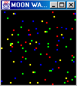
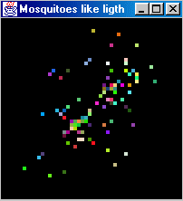
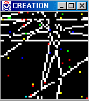
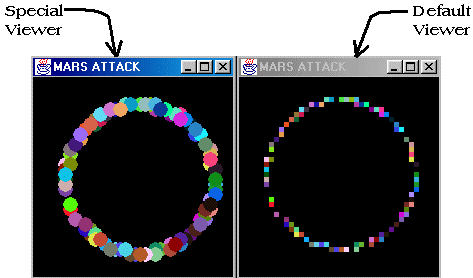

Figure 1. walkers are just walking

Walkers is a little simulation where the turtle have two behaviors: walk forward or change its color according to a new random heading. This simulation was made to test the good working of the heading primitives
Figure 2. Mosquitoes fly around but always return to the light source

In Mosquitoes the turtles just "fly" in a random way during a countdown and then fall down to a light source represented by a yellow patch. Turtles known the localization (x,y) of this patch (as a parameter in the constructor). So they use the towards command to set their heading.
setHeading(towards(x,y)); |
Figure 3. A turtle can create other turtles

In this simulation a turtle, a creator, tests the good working of the createTurtle command. When moving, a creator draws the patches in white. Then, when it crosses a patch that is already white, it creates a new turtle of a random kind using the createTurtle command.
createTurtle(new Walker()); |
Figure 4. Multiple world interpretations

The Ovni (french for UFO) simulation was made only to test the display of multiple representations at the same time. To do this we have written a SpecialViewer (extends Viewer) and overridden its paintTurtle method in order to obtain that the turtles was shown like disks. So it is possible to create your own representation of a patch or a turtle (you can use a gif for a turtle).
public class SpecialViewer extends Viewer
{
public void paintTurtle(Graphics g,Turtle t,int x,int y,int cellSize)
{
g.setColor(t.getColor());
g.fillOval(x,y,cellSize*3,cellSize*3);
}
public void paintPatch(Graphics g,Patch p,int x,int y,int cellSize)
{
g.setColor(p.getColor());
g.fillRect(x,y,cellSize*3,cellSize*3);
}
} |